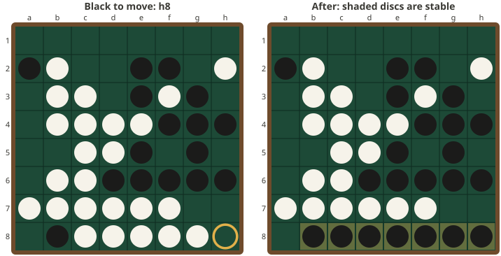
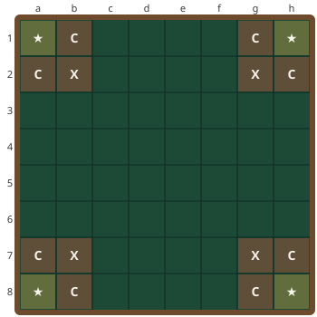
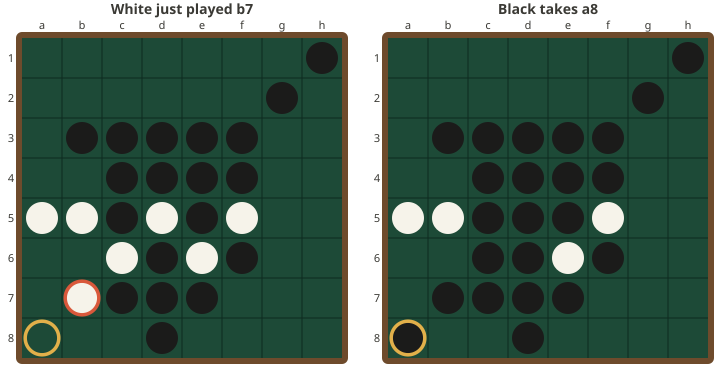
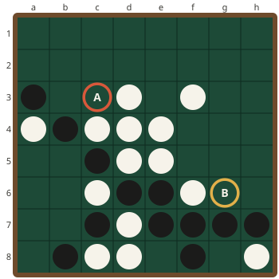
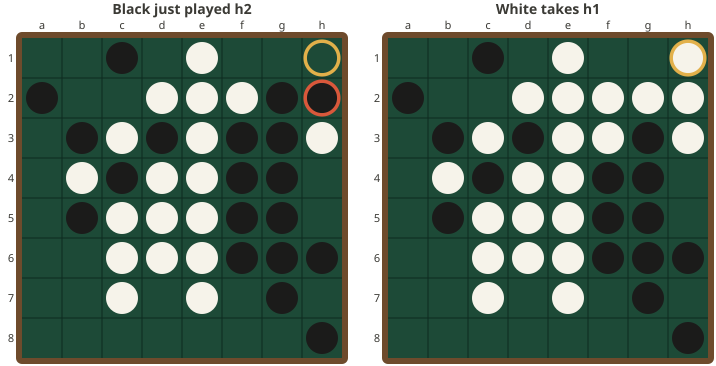
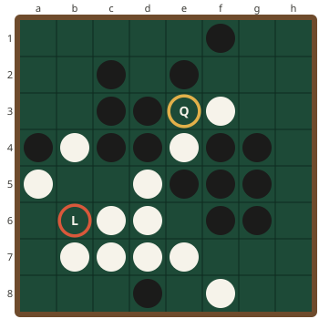
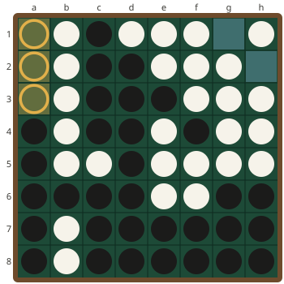
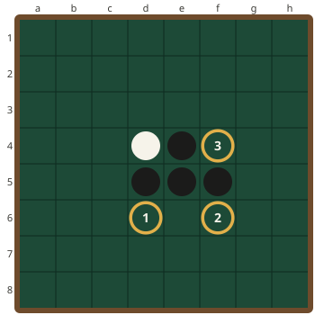

Reversi Strategy: How to Win at Reversi
The core Reversi strategy fits in one sentence: take the corners, don't play next to an empty corner, and flip few discs early so that you keep more legal moves than your opponent. Disc count only matters at the very end. Below, each idea gets its own short section and a board diagram, in roughly the order you will need them during a game.
New to the game? Start with how to play Reversi: the rules, with diagrams for legal moves, passing and how a game ends.
The diagrams use the same names as our board: columns a to h from left to right, rows 1 to 8 from top to bottom. Every position shown comes from a real sequence of legal moves from the normal starting position, so you could reach it in a game. A gold ring marks a good move, a red ring marks a risky or bad one.
How do you win at Reversi?
You win at Reversi by having more discs than your opponent when neither side can move, but you get there by controlling where the game can go, not by grabbing discs. Strong players follow a handful of principles, and almost every tip and trick you will read about Reversi strategy is one of these:
- Take corners: a corner disc can never be flipped.
- Avoid X-squares and C-squares while the corner next to them is empty.
- Flip fewer discs early and keep your number of legal moves high.
- Treat edges with care: they can be solid or they can hand over a corner.
- Keep few frontier discs and look for quiet moves.
- Count empty squares in the endgame and try to make the last move in each region.
None of these wins every game on its own, and there is no trick that lets you always win at Reversi. Together, though, they explain why one player ends up with all the good moves and the other is forced into bad ones.
Why are corners so important?
A disc in a corner can never be flipped, because there is no square beyond it from which to trap it. That makes corners the safest squares on the board, and they spread their safety: an unbroken line of your discs running along the edge from your corner can never be flipped either. Discs that can no longer be flipped are called stable discs, and the endgame is largely a race to collect them.

Corners rarely come free. You usually get one because your opponent was forced to play next to it, which is what the next section is about. When you do take a corner, build out from it along the edges; each disc you add that touches your stable group is one your opponent can no longer win back.
What are X-squares and C-squares, and why avoid them?
X-squares are the four squares diagonally next to a corner (b2, g2, b7, g7), and C-squares are the eight edge squares directly beside a corner (such as b1 and a2). Playing on one of them while that corner is still empty often gives your opponent a way into the corner, so a sound Reversi strategy keeps off them until the corner is settled or there is no reasonable alternative.

An X-square is usually the worse of the two. A disc there sits on the long diagonal, so any of your opponent's discs further along that diagonal can trap it from the corner. In the position below White has just played b7, and Black can answer at once in the a8 corner.

C-squares are less dangerous but follow the same logic along the edge; there is an example in the section on edges. Late in the game, once a corner is already taken, its X- and C-squares lose their risk and can be perfectly good moves.
Why can flipping fewer discs be better?
Flipping fewer discs early is often better because it keeps your opponent short of moves. Mobility is the number of legal moves a player has. Each disc you flip is one more disc your opponent can use to bracket a line, so big captures in the opening and middle game tend to hand the other side more choices. A player who runs low on choices is eventually forced to play an X-square, a C-square or a weak edge move.

Move A looks more attractive because it wins more discs right now, yet it gives White four extra options. Over a whole game that difference adds up: the player with more moves gets to wait, while the player with fewer moves has to choose between bad squares. This is the reason the best strategy for Reversi feels backwards at first. Count discs at the end; in the opening and middle game, count moves.
Are edges good or bad?
Edges are neither good nor bad on their own. An edge disc can only be flipped along the edge, which makes it harder to attack than a disc in the middle, but edge moves also use up safe moves and can open a path to a corner. The question to ask before every edge move is what it allows your opponent to do next.

Edges become strong when they cannot be attacked: a full edge, or an edge built out from your own corner. They become weak when they leave a single empty square that your opponent can fill to bracket your discs, or when they sit next to an empty corner as in the example. If you are unsure, a quiet move in the middle is usually the safer choice. Good Reversi strategy treats an edge as something to build, not something to grab.
What are frontier discs and quiet moves?
Frontier discs are discs that touch at least one empty square, and a quiet move is a move that flips discs without adding to your frontier. Your opponent can only play next to your frontier discs, so fewer frontier discs means fewer moves for them. Discs packed in the middle of a group, with no empty neighbours, are invisible to your opponent for now. Of all the parts of Reversi strategy, this is the one beginners notice last.

The two moves capture the same number of discs, so the difference is purely about shape. Q turns a disc that was already surrounded, giving White almost nothing new to aim at. L flips a disc on the outside of the group and opens fresh targets. When you have several moves that look alike, prefer the one that touches the fewest empty squares; this single habit is one of the most useful Reversi tips for moving from beginner to intermediate play.
What is parity in the endgame?
Parity is the idea that, late in the game, it pays to make the last move in each separate region of empty squares, because the last move in a region cannot be answered there. Without passes, players alternate inside a region, so if a region has an odd number of empty squares, the player who moves into it first can expect to move into it last as well. The usual rule of thumb is therefore to play into regions with an odd number of empty squares and leave the even ones alone.

Parity is a guideline, not a law. Passes change the count, and a region where one player has no legal moves behaves differently, so in the last ten or so moves it is worth actually reading out the possibilities. With only a few empty squares left, counting every line is realistic, and it is the most reliable way to turn a close Reversi game into a win.
How do I beat the computer on this site?
Play the principles above patiently and let the computer run out of good moves. Our AI has one fixed strength; there are no difficulty levels to choose from. It picks each move with a Monte Carlo tree search: it plays out many random games from the current position for up to about eight seconds and chooses the move that did best.
- Keep the legal-move dots on while you learn (they are under Options). Before each move, count how many of those dots your move would leave the AI.
- Stay off X-squares and C-squares next to empty corners, even when a move there flips a lot.
- When the AI takes a corner, don't panic. Avoid feeding it the edge next to that corner and look for the corners it has not reached yet.
- From about twelve empty squares onward, slow down and count regions for parity.
Games are not saved, so if you want to try an idea again, start a new game and aim for the same kind of position.
What's a good opening for beginners?
For beginners, a good opening is a quiet one: stay in the central 4×4 area, flip one or two discs at a time, and don't be the first player to move out towards the edges. Black's four possible first moves are all equivalent by symmetry, so the real choices start with White's reply.

You don't need to memorise opening lines to play well. Keeping your moves inside the centre and your disc count modest will carry you through the first ten moves; from there the middle-game principles take over.
A Reversi strategy checklist for every move
- Can I take a corner? If so, it is usually right.
- Does my move go next to an empty corner? If so, look for something else.
- How many legal moves will my opponent have afterwards? Fewer is better.
- Does it flip discs on the outside of a group? Prefer moves that flip surrounded discs.
- In the endgame: which regions have an odd number of empty squares?
Try this Reversi strategy against the AI
The fastest way to make these ideas stick is to use them in a real game. You play Black, the computer plays White, and the legal-move dots show your options.